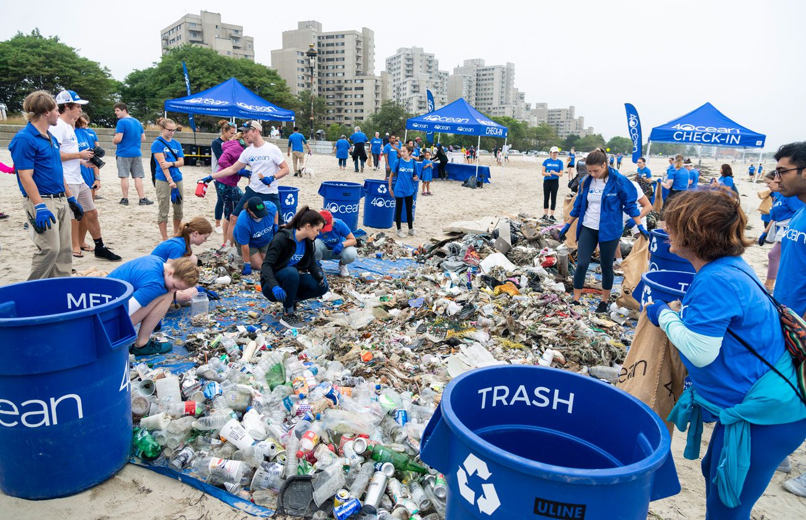

Reforestation Project in Amazon Rainforest
The Eco Guardian organization initiated a reforestation project in the Amazon Rainforest to combat deforestation and preserve biodiversity. Through collaborative efforts with local communities and environmental experts, thousands of hectares of degraded land were restored with native tree species. This project not only helped in restoring the ecosystem but also provided sustainable livelihoods for indigenous communities.

Plastic Waste Cleanup Campaign in Coastal Areas
Eco Guardian launched a plastic waste cleanup campaign along the coastal areas to address marine pollution and protect marine life. With the participation of volunteers and support from local authorities, significant amounts of plastic waste were collected and properly disposed of. The campaign raised awareness about the importance of plastic waste management and encouraged community engagement in environmental conservation.

Community Recycling Program
Eco Guardian implemented a community recycling program aimed at reducing waste and promoting recycling practices. Through education and outreach programs, households were encouraged to segregate recyclable materials and participate in recycling initiatives. The program not only reduced the amount of waste sent to landfills but also promoted a culture of sustainability and environmental responsibility within the community.
Solar Energy Initiative in Rural Communities
Eco Guardian implemented a solar energy initiative in rural communities to provide clean and sustainable energy solutions. By installing solar panels and promoting renewable energy technologies, the initiative improved access to electricity, reduced reliance on fossil fuels, and empowered communities to pursue economic development opportunities.

Environmental Education Program in Schools
Eco Guardian launched an environmental education program in schools to raise awareness about environmental issues and foster a sense of environmental stewardship among students. Through interactive workshops, field trips, and curriculum integration, the program equipped students with knowledge and skills to become environmental advocates and responsible citizens.